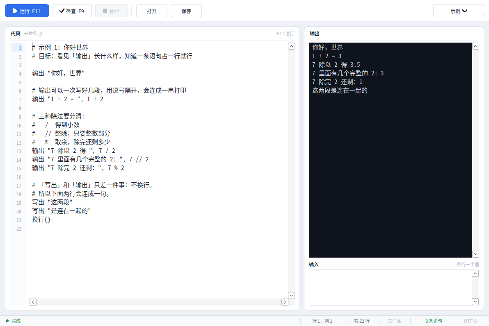

v0.4.0 · 语言规范 v0.3 · 2026-11-08
用中文写代码的
第一门编程语言
G-Lang 是一门面向中文母语初学者的脚本语言：关键字是中文，语法像人话，报错也告诉你怎么改。 它不追求性能，只追求「第一次写代码的人也能读懂自己写了什么」。
# 算 1 到 10 的和 设 总和 为 0 重复 个数 从 1 到 10 设 总和 为 总和 + 个数 结束 输出 "结果是：", 总和 # 三种除法要分清 输出 "7 除以 2 得 ", 7 / 2 输出 "完整的 2 有几个：", 7 // 2 输出 "还剩：", 7 % 2
把一行关键字连起来默读一遍，读不通就是设计有问题
这是 G-Lang 最重要的一条设计原则。v0.2 就因为「默读不通」把 若 改成了 如果、把 接收 改成了 接受、把 输出不换行 缩成了 写出。
def grade(score): if score >= 90: return "A" elif score >= 60: return "B" else: return "C"
函数 评等级 接受 分数 如果 分数 大于等于 90 返回 "A" 否则如果 分数 大于等于 60 返回 "B" 否则 返回 "C" 结束 结束
可读性 > 简洁性 > 性能
每一处克制都有代价算过：关键字少一个就少背一个，符号能省一次输入法切换就省一次。
37 个关键字，一义一词
一个概念只给一个词，不给同义词——不用纠结写 如果 还是 假如。其余能力全部走内置函数。
换行断句，结束 收块
不靠缩进判定代码块。从聊天记录、网页、微信里复制粘贴，缩进丢了照样能跑。
九种值 + 可选类型标注
整数、小数、文本、布尔、列表、字典、函数、错误、空。想写契约时再写 设 年龄: 整数 为 18。
63 个内置函数
数学、文本、类型、容器、高阶函数一应俱全。命名规则是「动词在前、对象在后」：转整数 而非 整数转。
三行制报错
行号定位到列 → 引用源码原文并打插入符 → 给一句能直接照做的修法。不写「语法错误」这种废话。
全角标点自动纠正
中文输入法打出的 （ “ ， 自动变成半角，旧 GBK 源文件自动转码——新手的第一道坎被填平了。
出错的时候，它像旁边坐着个会讲题的人
三条硬性要求：必须有行号且能定位到列、必须引用源码原文、必须给出可执行的修法。这是本语言与「能跑就行」的分水岭。
写好的程序，命令行、工作台、手机跑出来是一样的
从 v0.3.1 起，CLI 也接到同一个 run_source() 上——以前三端各走一条路，迟早点分叉。
开箱即用：左边写代码，右上输出，右下填输入。F11 运行、F9 查语法、Esc 停止。
glang-workbench.exe
适合管道、批处理与自动测试。支持 --检查、--提示、--版本。
glang 程序.gl
同一套解释器内核，界面另写。android/ 目录是完整的 Gradle 工程。
android/

走到哪一步了，一眼看完
版本号自 0.4.0 起遵循 SemVer 2.0.0；语言规范版本与发行版版本是两个号，别混。